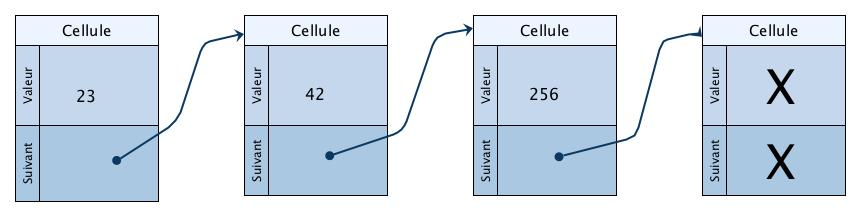

Le problème de Flavius Josèphe⚓︎
Source
@crédit du cours : Frederic Mandon 
1. Enoncé⚓︎
Problème de Flavius Josephe
Flavius Josèphe est un historiographe romain juif du 1er siècle, dont l'oeuvre historique est sujette à caution.
Il a donné la première version du problème suivant :
"41 soldats juifs, cernés par des soldats romains,
décident de former un cercle. Un premier soldat [juif] est choisi au hasard et est exécuté, le troisième à partir de sa gauche
(ou droite) est ensuite exécuté. Tant qu'il y a des soldats, la sélection continue. Le but est de trouver à quel endroit
doit se tenir un soldat pour être le dernier. Josèphe, peu enthousiaste à l'idée de mourir, parvint à trouver l'endroit où se tenir.
Quel est-il ?"
Variante : 42 soldats juifs, deux survivants, et les romains en tuent un sur trois.
Problème de Flavius Josèphe
 Objectif : Résoudre le problème de Josèphe avec une liste chaînée "normale".
Objectif : Résoudre le problème de Josèphe avec une liste chaînée "normale".
Il y a deux sous-problèmes :
- la création de la liste des soldats
- la recherche du ou des survivants
Enoncé
Josèphe fut amené à se disposer en cercle avec quarante personnes, sachant qu’en comptant de trois en trois à partir de l’un d’eux, ils devaient se supprimer mutuellement.
- Le premier à être supprimé est rangé en position 3 et il se fait supprimer par celui qui est rangé en position 6
- celui-ci est le suivant à être supprimé, par celui en position 9.
Ainsi de suite, progressivement, toute la troupe est appelée à s’autodétruire. À quelle place doit se ranger Josèphe pour être le dernier et devoir ainsi se supprimer lui-même ?
On va utiliser l'implémentation de la suite en POO telle que :
On dispose des primitives suivante sur la structure liste :
- test de vacuité d'une liste :
estVide(liste) - Obtention de la longueur de la liste :
longueur(liste) - Accéder au k-ième élément de la liste :
lire(liste , k) - Supprimer le k-ième élément de la liste :
supprimer(liste , k) - Insérer un élément en k-ième position dans la liste :
inserer(liste , k)
2. Une implémentation des listes chainées⚓︎
Une liste peut être considérée comme une suite de cellules (ou noeuds), éventuellement vide (None) pour la liste vide. Chaque cellule comporte une tête (la donnée) et une queue (le suivant), qui est soit une autre liste, soit la liste vide (None, None).
Remarque : On utilise souvent tête au lieu de donnee et queue au lieu de suivant. Dans le cadre de ce TP, ces noms sont utilisés dans un autre sens pour les listes circulaires, ce qui pourrait porter à confusion.

Les attributs de la classe CelluleL sont :
donnee: l'élément de tête de la liste (éventuellementNone)suivant: la liste composant la deuxième partie du noeudlongueur: on rajoute cet attribut pour plus de commodité
les méthodes sont celles données par les primitives ci-dessus(estVide(liste),longueur(liste),lire(liste , k),supprimer(liste , k),inserer(liste , k)).
class CelluleL:
def __init__(self , donnee = None , suivant = None) :
self.donnee = donnee
self.suivant = suivant
if self.donnee is None and self.suivant is None :
self.longueur = 0
else :
self.longueur = self.suivant.longueur + 1
def __repr__(self):
if self.donnee is None :
return '()'
else:
# la 1ère possibilité met l'aspect récursif en avant
# la 2ème possibilité met l'aspect chaîné en avant
#return '(' + str(self.donnee) + repr(self.suivant).replace('None','()') + ')'
return str(self.donnee) + '->' + repr(self.suivant)
def estVide(self):
return self.longueur == 0
def lire(self, k) :
if k >= self.longueur :
raise IndexError('Index trop grand')
else :
if k == 0:
return self.donnee
else:
self = self.suivant
return self.lire(k - 1)
def supprimer(self, k):
if k >= self.longueur :
raise IndexError('Index trop grand')
elif k == 0 :
return CelluleL(self.suivant.donnee,self.suivant.suivant)
else :
return CelluleL(self.donnee, self.suivant.supprimer(k-1))
def inserer(self , element, k) :
# peut insérer en fin de liste avec k = self.longueur
if k > self.longueur:
raise IndexError('Index trop grand')
elif k == 0 and not self.estVide():
return CelluleL(element,self)
elif k == 0 and self.estVide():
return CelluleL(element, CelluleL())
else :
return CelluleL(self.donnee, self.suivant.inserer(element, k-1))
üëâ Appropriez vous la classe CelluleL en r√©alisant quelques tests (dans un fichier de test ...) : construteur, test de vacuit√©, ajouter l'√©l√©ment, test de vacuit√©, Avec une boucle ajouter les √©lements de 1 √† 4, test de la longeur, affichage de la liste, ins√©rer, supprimer.
Quelques Tests
# quelques tests
liste_vide = CelluleL()
print("test liste vide : ", liste_vide, "est vide : ", liste_vide.estVide(), " et de longueur ",
liste_vide.longueur)
maliste = CelluleL(5,liste_vide)
for i in range(4 , -1 , -1) :
maliste = CelluleL(i,maliste)
print("La liste : ",maliste, "a pour longueur ",maliste.longueur)
print("lecture des éléments d'indices 1 et 5 :",maliste.lire(1),maliste.lire(5))
print()
i = 5
print("Suppression puis ajout de l'élément d'indice ",i)
maliste = maliste.supprimer(i)
print("Après suppression : ",maliste, "de longueur ",maliste.longueur)
maliste = maliste.inserer(i,i)
print("Après insertion : ",maliste, "de longueur ",maliste.longueur)
3. Application au problème de Josèphe⚓︎
On rappelle le terrible problème de Josèphe. Un nombre n de soldats juifs sont positionnés en cercle. Les soldats romains tuent le 1er soldat, puis tuent un soldat sur k jusqu'à ce qu'il n'y ait plus que s survivants. On demande le(s) numéro(s) du(des) survivants.
Résoudre ce problème en utilisant une liste chainée.
def josephe(n, k, s):
"""
Résoud le problème de Josèphe. Les soldats sont numérotés de 1 à n
@param n : entier >= 1, nombre initial de soldats
@param k : entier >= 2, saut entre deux meurtres de soldats
@param s: entier >=0, nombre de soldats survivants
@return survivor : liste d'entiers, numéros des soldats survivants
"""
#Construction de la liste vide initiale.
survivor = CelluleL()
#Création de la liste intiale de soldat
#Suppression des soldats tués
#Retourne la liste des soldats survivants
return survivor
#tests à compléter (ça ne risque pas de fonctionner avec les "?")
print("un soldat sur deux")
for i in range(1, 42):
print("Survivant pour ", i, "soldats :",josephe(i,2,1).???)
print()
tset = josephe(41, 3, 2)
print("2 survivants pour 41 soldats, avec 1 sur 3 :", tset.????, tset.????)
tset = josephe(1234,7, 10)
print("10 survivants pour 1234 soldats, avec 1 sur 7 :", tset)
Correction
from celluleL import CelluleL
def josephe(n, k, s):
"""
Résoud le problème de Josèphe. Les soldats sont numérotés de 1 à n
@param n : entier >= 1, nombre initial de soldats
@param k : entier >= 2, saut entre deux meurtres de soldats
@param s: entier >=0, nombre de soldats survivants
@return survivor : liste d'entiers, numéros des sopldats survivants
"""
survivor = CelluleL()
#Instanciation de la liste chaînée des n soldats en commencant par le numéro le plus élévé
#pour obtenir une liste chainée dans l'ordre croissant : 0->1->2->3->4->5->()
survivor = CelluleL(n,survivor)
for i in range(n-1,0,-1) :
survivor = CelluleL(i,survivor)
#print(survivor)
#noVictime est la variable temporaire indiquant le n° d'ordre de la victime
noVictime = 0
#Tant que la longueur de la liste est supérieur au nb de survivants souhaités, on élimine de la liste
while survivor.longueur > s :
#On calcule qui sera la prochaine victime
noVictime = (noVictime + k -1) % (survivor.longueur)
#print("La " + str(n-survivor.longueur) + "e victime est le " + str(survivor.lire(noVictime)))
survivor= survivor.supprimer(noVictime)
#print(survivor)
return survivor
#Test pour 1 survivant, tout les 3 soldats avec 41 soldats au départ
# tset = josephe(41, 3, 1)
# print("le Survivant pour 1 survivant, tout les 3 soldats avec 41 soldats au départ est : ",tset.donnee)
# #tests à compléter (ça ne risque pas de fonctionner avec les "?")
# print("un soldat sur deux")
# for i in range(40, 42):
# print("Survivant pour ", i, "soldats :",josephe(i,2,1).donnee)
# print()
test2 = josephe(41, 3, 2)
#print("2 survivants pour 41 soldats, avec 1 sur 3 :", tset.donnee, tset.suivant.donnee)
print("2 survivants pour 41 soldats, avec 1 sur 3 :", test2.donnee, test2.suivant.donnee)
print(test2)
test3 = josephe(1234,7, 10)
print("10 survivants pour 1234 soldats, avec 1 sur 7 :", test3)
4. Un deuxième type de liste : la liste chaînée circulaire⚓︎
Une liste chaînée circulaire est une liste chaînée dans laquelle le dernier élément n'est pas la liste vide, mais le premier élément de la liste. les listes chaînées circulaires sont notamment utilisées pour représenter des files. Cette structure de données est particulièrement adaptée à la résolution du problème de Josèphe. Mais elle est aussi utilisée par exemple pour gérer le partage du processeur (CPU) entre différents programmes (différents processus).

On peut proposer différentes interfaces pour ce type de données. Dans le cadre de ce TP, les primitives proposées de ListeCirc sont :
- Test de vacuité d'une liste :
estVide(liste) - Obtention de la longueur de la liste :
longueur(liste) - Ajout d'un élément en fin de liste :
ajoutfin(donnee) - Supprimer la cellule courante connaissant la précédente:
supprimer(courant , precedent)
Une implantation de cette structure est proposée ci-dessous. Elle possède deux classes, Noeud et ListeCirc. La classe Noeud est celle de la liste chaînée non circulaire, l'attribut longueuren moins.
Les attributs de Noeud sont:
donnée: le contenu du noeudsuivant: le noeud suivant
La classe ListeCirc comporte deux noeuds : tête et queue. Plus précisément, les attributs à la création sont :
tête:Noeud(None par défaut, ou données de la tête)queue: égale àtêtelors de la création de la liste circulairetête.suivant:queue. Le noeud suivant la tête est la queuequeue.suivant:tête. Le noeud suivant la queue est la tête
Remarques / questions :
On aurait pu proposer une implémentation sans objet ListeCirc, et de même on aurait pu proposer un objet ListeChainee, qui aurait contenu les cellules de la liste chaînée non circulaire. On voit que les possibilités d'implémentations sont multiples.
Utiliser les mêmes noms de primitives permet d'écrire des programmes fonctionnant de manière identique avec les deux structures de données. Ce qui peut être très pratique.
La liste vide est composée d'une seule cellule, de donnée None, pointant sur elle-même. Lors du calcul de la longueur, de l'insertion ou de la suppression d'un élément, on est obligé de différencier ce cas. Le code est plus complexe que pour la liste chaînée non circulaire.
 Pourquoi utilise-t-on ici deux classes, Noeud et ListeCirc ?
Pourquoi utilise-t-on ici deux classes, Noeud et ListeCirc ?
Pourquoi ne reprend-on pas directement le calcul de la longueur comme dans le cas de la liste chaînée ?
class Noeud:
def __init__(self, donnee, suivant = None):
self.donnee = donnee
self.suivant = suivant
def __repr__(self):
if self.donnee == None:
return ""
else:
return str(self.donnee)
class ListeCirc:
def __init__(self, donnee_tete = None):
self.tete = Noeud(donnee_tete)
self.queue = self.tete
self.tete.suivant = self.queue
self.queue.suivant = self.tete
def estVide(self):
return self.tete.donnee is None
def longueur(self):
lg = None
return lg
def supprimerCourant(self, precedent, courant):
# Suppression du noeud courant connaissant le précédent
if self.tete == self.queue : # cas particulier : un seul noeud
self.tete.donnee = None
elif courant == self.tete : # cas particulier : suppression de la tête
self.tete = self.tete.suivant
self.queue.suivant = self.tete
elif courant == self.queue : # cas particulier : suppression de la queue
self.queue = precedent
self.queue.suivant = self.tete
else: # cas général
precedent.suivant = courant.suivant
def ajoutfin(self, donnee):
if self.tete.donnee is None: # on remplit d'abord la tête
self.tete.donnee = donnee
else: # sinon on crée un nouveau noeud
nouveauNoeud = Noeud(donnee)
self.queue.suivant = nouveauNoeud # On ajoute le noeud à la fin
self.queue = nouveauNoeud # il devient la nouvelle queue
self.queue.suivant = self.tete # et pointe sur la tête
def __repr__(self):
if self.tete.donnee is None :
return 'Liste vide'
else:
chaine = str(self.tete.donnee) + "->"
courant = self.tete
while courant.suivant != self.tete and courant.suivant.donnee is not None :
courant = courant.suivant
chaine = chaine + str(courant.donnee) + "->"
chaine = chaine + "tête"
return chaine
5. Le retour de Flavius⚓︎
objectif : Résoudre le problème de Flavius Josèphe avec une liste chaînée circulaire.
Remarque : on utilisera la spécificité des listes circulaires, un petit schéma pour s'en sortir sur les courants/précédents est bien utile
def josephe(n, k, s):
"""
Résoud le problème de Josèphe. Les soldats sont numérotés de 1 à n
@param n : entier >= 1, nombre initial de soldats
@param k : entier >= 2, saut entre deux meurtres de soldats
@param s: entier >=0, nombre de soldats survivants
@return survivor : liste d'entiers, numéros des sopldats survivants
"""
survivor = ListeCirc()
return survivor
print("un soldat sur deux")
for i in range(1,42):
print("Survivant pour ", i, "soldats :",josephe(i,2,1).tete.donnee)
print()
tset = josephe(41,3,2)
print("2 survivants pour 41 soldats, avec 1 sur 3 :", tset.tete.donnee, tset.queue.donnee)
tset = josephe(1234,7,10)
print("10 survivants pour 1234 soldats, avec 1 sur 7 :", tset)
Correction
def josephe(n, k, s):
"""
Résoud le problème de Josèphe. Les soldats sont numérotés de 1 à n
@param n : entier >= 1, nombre initial de soldats
@param k : entier >= 2, saut entre deux meurtres de soldats
@param s: entier >=0, nombre de soldats survivants
@return survivor : liste d'entiers, numéros des sopldats survivants
"""
survivor = ListeCirc()
#Instanciation de la liste chaînée des soldats
for i in range(1,n+1) :
survivor.ajoutfin(i)
print(survivor)
nbTues = 0
i = 1
noeudcourant = survivor.tete
#Tant que la longueur de la liste est supérieur au nb de survivants souhaités, on élimine de la liste
while n-nbTues > s :
#on progresse dans la liste chainée par cran de k-1
if (i==(k-1)):
survivor.supprimerCourant(noeudcourant, noeudcourant.suivant)
print(survivor)
noeudcourant = noeudcourant.suivant
i =1
nbTues += 1
else :
noeudcourant = noeudcourant.suivant
i +=1
return survivor
# print("un soldat sur deux")
# for i in range(1,42):
# print("Survivant pour ", i, "soldats :",josephe(i,2,1).tete.donnee)
# print()
tset = josephe(10,2,1)
print("2 survivants pour 41 soldats, avec 1 sur 3 :", tset.tete.donnee, tset.tete.suivant.donnee)
print(tset)
# tset = josephe(1234,7,10)
# print("10 survivants pour 1234 soldats, avec 1 sur 7 :", tset)
6. Bonus⚓︎
6.1 Construire un jeu de tests⚓︎
Construire un jeu de tests aussi complet que possible pour la classe ListeCirc.
Correction
# quelques tests
liste_vide = ListeCirc()
print("test liste vide : ", liste_vide, "--> est vide : ", liste_vide.estVide())
maliste = ListeCirc(0)
for i in range(1,5) :
maliste.ajoutfin(i)
print("La liste : ",maliste)
print("longeur de maliste :", maliste.longueur())
# print("lecture des éléments d'indices 1 et 5 :",maliste.lire(1),maliste.lire(5))
# print()
noeudcourant = maliste.tete
print(noeudcourant)
maliste.supprimerCourant(noeudcourant.suivant, noeudcourant.suivant.suivant)
print("La liste apres suppression element +2 : ",maliste)
# print("ordre inverse")
# maliste2 = CelluleL(10,liste_vide)
# for i in range(9,0,-1) :
# maliste2 = CelluleL(i,maliste2)
# print(maliste2)
# i = 5
# print("Suppression puis ajout de l'élément d'indice ",i)
# maliste = maliste.supprimer(i)
# print("Après suppression : ",maliste, "de longueur ",maliste.longueur)
# maliste = maliste.inserer(i,i)
# print("Après insertion : ",maliste, "de longueur ",maliste.longueur)
6.2 Coder la méthode longueur pour la classe ListeCirc⚓︎
Correction
def longueur(self):
lg = None
if self.tete != None:
courant = self.tete
fin = self.queue
lg = 1
while courant != fin:
courant = courant.suivant
lg += 1
return lg
6.3 Coder des méthodes⚓︎
Coder les méthodes suivantes : lire(liste , k), supprimer(liste , k) et inserer(liste , k) pour la classe ListeCirc.
Correction
def lire(self, k):
courant = self.tete
for i in range(k-1):
courant = courant.suivant
return courant
def supprimer(self, k):
courant = self.tete
for i in range(k-1):
precedent = courant
courant = courant.suivant
if self.tete == self.queue :
self.tete.donnee = None
elif courant == self.tete :
self.tete = self.tete.suivant
self.queue.suivant = self.tete
elif courant == self.queue :
self.queue = precedent
self.queue.suivant = self.tete
else:
precedent.suivant = courant.suivant
Encore plus
⭐ Le fin du fin serait d'avoir la même interface pour les deux classes listeCir et listeChainee (mêmes méthodes avec les mêmes spécifications), afin de pouvoir les utiliser indifféremment. L'optique de ce TP était de montrer deux types d'implémentation différents. Mais si vous en avez le courage, vous pouvez écrire la classe listeChainee, y mettre toutes les méthodes auparavant dans CelluleL, et compléter les deux classes afin que leur interface soit identique...